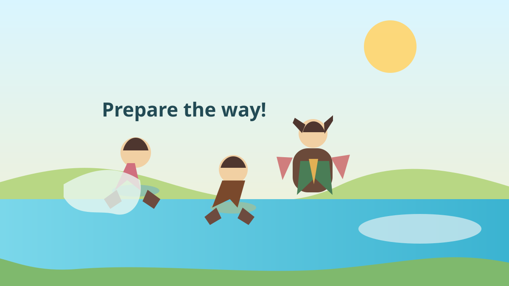
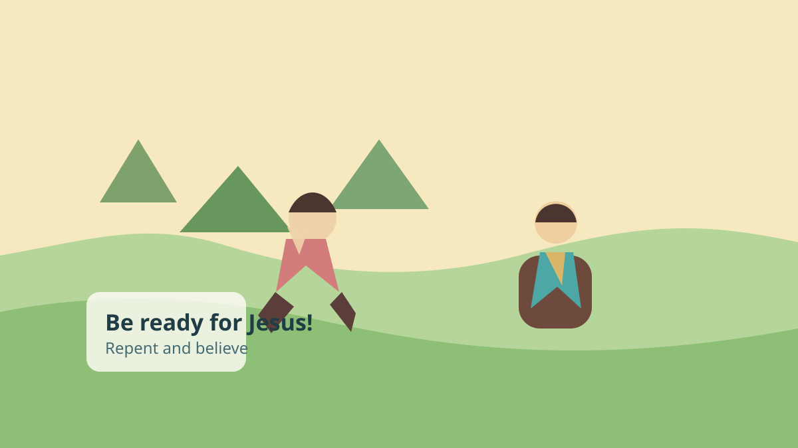
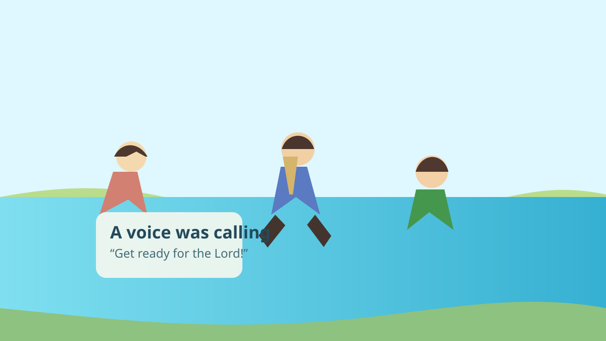

The best news is not that people were perfectly ready. God was preparing the way.

The Gospel Project: Kids • John’s ministry began
In the wilderness, John the Baptist shared an important message. People were hearing that something huge was coming.
John told them to change their hearts and get ready for Jesus.

Luke 3:1–6 • Isaiah 40:3

Many people came to hear him. He did not sound fancy or proud. He spoke clearly and boldly.
He told them, “Repent! The kingdom of God is near.”
Matthew 3:1–2 • Mark 1:4
John told people to make a path for the Lord.
He called them to confess sin and live for God.
Water showed they were ready to follow God.
Jesus was coming, and John was helping people see it.
Matthew 3:3–6
People were curious. John looked different. He wore camel hair and ate locusts and wild honey.
He was not trying to impress people. He was pointing them to Jesus.
Matthew 3:4 • Mark 1:6
John said he was not even worthy to carry Jesus’ sandals. That shows John was humble.
John was important because he prepared people for Jesus.
John was a messenger, but Jesus is the Savior.
Matthew 3:11–12
John called people to repent and believe. Jesus is the one who forgives sin and brings us back to God.
He is the one who prepares hearts and gives us hope.
John 1:29 • Luke 3:15–17
We can get ready for Jesus by listening to His Word, turning away from sin, and trusting Him.
Luke 3:4–6
Pray and talk together